library(tidyverse)
library(robustbase) # star data
library(boot) # bootstrapping
library(correlation) # get different correlations
library(permuco) # run permutation tests
library(parameters) # SE
library(data.table) # fread
library(infer) # sample_rep_n function
library(palmerpenguins) # penguins dataset
#Additional packages
library(datawizard) #For Winsorizing
library(gridExtra) #For Visualizing
library(gt) #For formatted model tables
library(lmtest) #For robust standard errors
library(sandwich) #For robust standard errorsRobust Methods Lab
Lab 1-Robust Methods
Instructions
If you are fitting a model, display the model output in a neatly formatted table. (The
gttidyandkablefunctions can help!)If you are creating a plot, use
ggplotorbaseand make sure they are publication ready. That means there are clear labels for all axes, titles, etc.Commit and push your work to GitHub regularly, at least after each exercise. Write short and informative commit messages.
When you’re done, we should be able to knit the final version of the QMD in your GitHub as a HTML.
Robust Correlations
Use the stars data in robustbase. This data looks at the relationship between temperature at the surface of a star and the light intensity.
stars<-robustbase::starsCYGa. Plot the data and describe the pattern seen. What is Pearson’s r?
stars %>% ggplot(aes(log.Te, log.light)) + geom_point(size = 4, alpha = .75) + geom_smooth(method = 'lm', se = FALSE, color = '#84a59d') + ggtitle("Scatter Plot of Light Intensity and Surface Temperature") + ylab("Light Intensity") + xlab("Surface Temperature")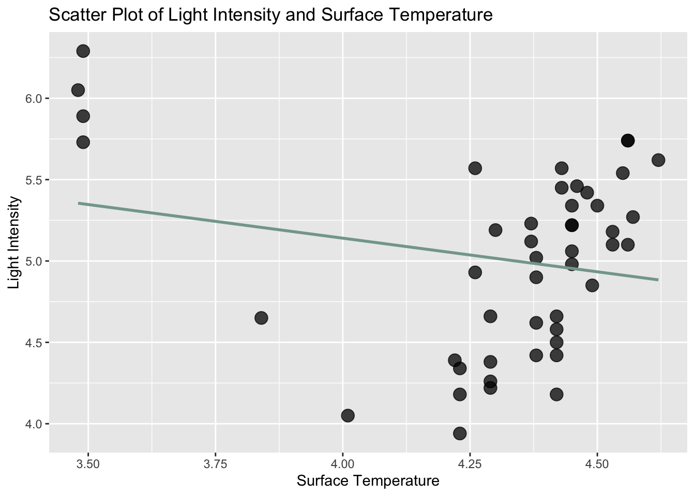
From visual inspection of the scatter plot, it appears as though there may be a positive linear relationship between light intensity and surface temperature, such that as one increases so does the other. However, the presence of potential outliers, particularly in the upper left quadrant (high light intensity, but low surface temperature) is likely distorting that relationship. The line of best fit suggests that the outliers are causing the suprious appearance of a negative correlation; light intensity decreasing as surface temperature increases. Pearson’s r adds more evidence to this suspicion:
cor.test(stars$log.Te, stars$log.light, method = c("pearson"))Pearson's product-moment correlation data: stars$log.Te and stars$log.light t = -1.4438, df = 45, p-value = 0.1557 alternative hypothesis: true correlation is not equal to 0 95 percent confidence interval: -0.46922761 0.08168953 sample estimates: cor -0.2104133The test returns a (non-significant) negative correlation.
b. Re-run the correlation, but this time use the winsorized r (20%). Do this manually and then with the correlation::correlation function from
easystats.#Manual Winsorizing stars_win = stars %>% dplyr::summarise(log.Te_win = datawizard::winsorize(log.Te), log.light_win = datawizard::winsorize(log.light)) cor.test(stars_win$log.Te_win, stars_win$log.light_win, method = c("pearson"))Pearson's product-moment correlation data: stars_win$log.Te_win and stars_win$log.light_win t = 2.4615, df = 45, p-value = 0.01774 alternative hypothesis: true correlation is not equal to 0 95 percent confidence interval: 0.06360095 0.57478416 sample estimates: cor 0.3444762#Winsorizing using the correlation package correlation::correlation(stars, winsorize = .2)# Correlation Matrix (pearson-method) Parameter1 | Parameter2 | r | 95% CI | t(45) | p -------------------------------------------------------------- log.Te | log.light | 0.34 | [0.06, 0.57] | 2.46 | 0.018* p-value adjustment method: Holm (1979) Observations: 47c. Compare the correlations.
p1 = stars %>% ggplot(aes(log.Te, log.light)) + geom_point(size = 4, alpha = .75) + geom_smooth(method = "lm", se = FALSE, color = '#84a59d') + ggtitle("Raw Values") + ylab("Light Intensity") + xlab("Surface Temperature") p2 = stars_win %>% ggplot(aes(log.Te_win, log.light_win)) + geom_point(size = 4, alpha = .75) + geom_smooth(method = "lm", se = FALSE, color = '#84a59d') + ggtitle("Winsorized Values") + ylab("Light Intensity") + xlab("Surface Temperature") grid.arrange(p1, p2, ncol = 2)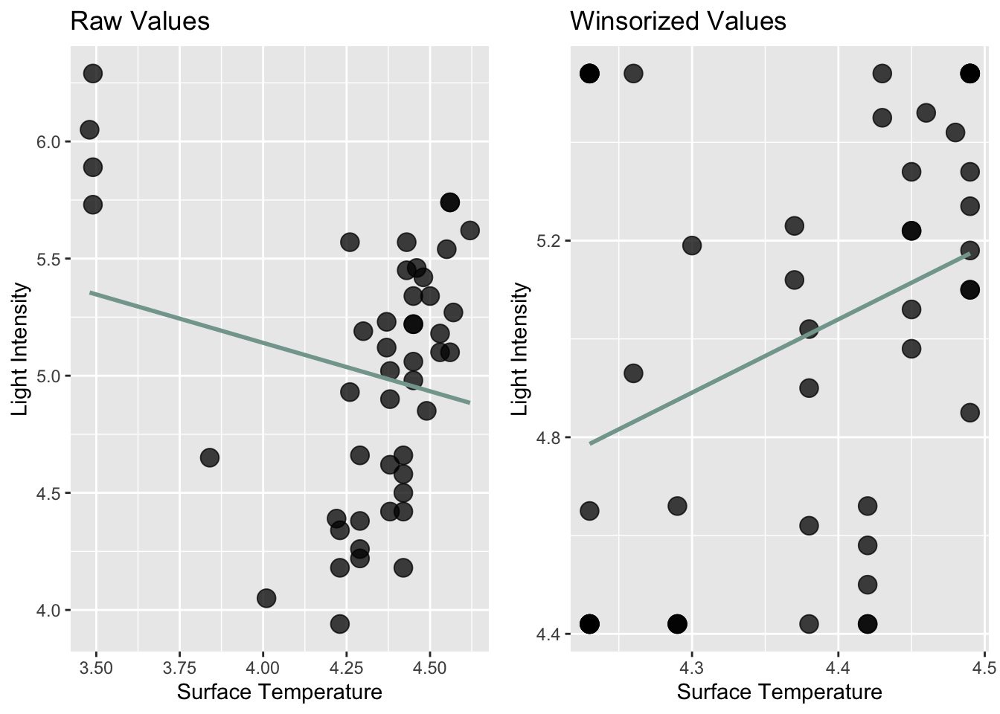
Both of the Winsorized correlations reveal a significant, positive correlation between light intensity and surface temperature This contrasts with the non-significant, negative correlation returned when using the raw values. This suggests that the outliers in the raw data are distorting the true relationship.
Bootstrapping and Permutations
For the following data: [8.453532, 10.025041, 11.495339, 9.367600, 8.333229, 9.788753, 10.883344, 10.543059, 9.869095, 10.799819]
a. Bootstrap the mean (using the
bootpackage) and plot the histogram withggplot2data = c(8.453532, 10.025041, 11.495339, 9.367600, 8.333229, 9.788753, 10.883344, 10.543059, 9.869095, 10.799819) mean_func = function(data, indices) { return(mean(data[indices])) } result = boot(data, mean_func, R = 10000) boot_means = data.frame(mean = result$t) boot_means %>% ggplot(aes(mean)) + geom_histogram(bins = 30) + ggtitle("Bootstrapped Mean Distribution") + xlab("Mean") + ylab("Frequency")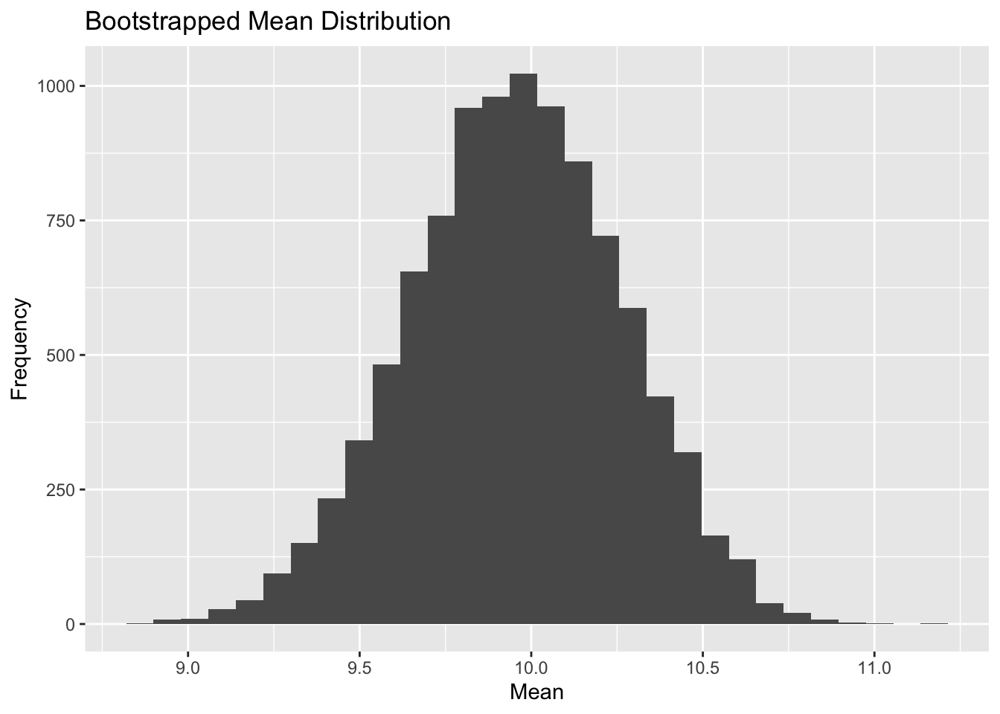
b. Bootstrap the median (using the
bootpackage) and plot the histogram withggplot2mdn_func = function(data, indices) { return(median(data[indices])) } result_mdn = boot(data, mdn_func, R = 10000) boot_mdns = data.frame(mdn = result_mdn$t) boot_mdns %>% ggplot(aes(mdn)) + geom_histogram(bins = 30) + ggtitle("Bootstrapped Median Distribution") + xlab("Median") + ylab("Frequency")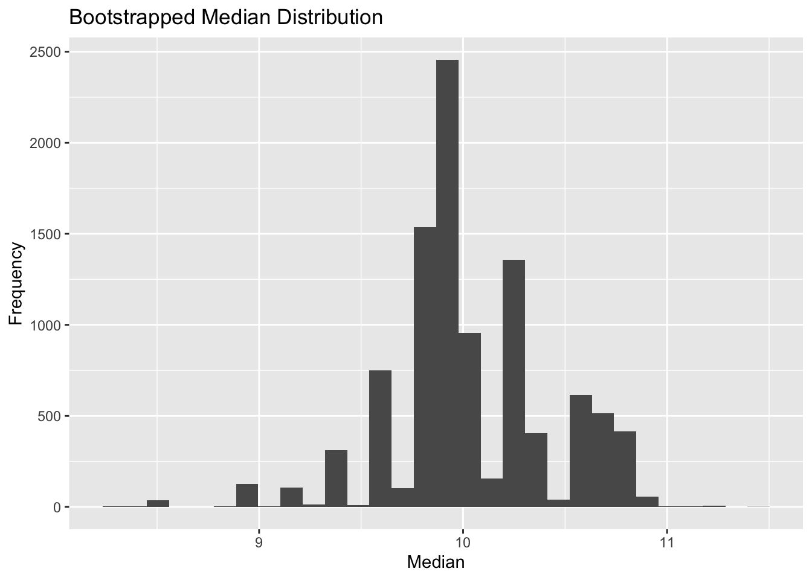
c. For the mean bootstraps, plot the 95% confidence intervals (percentile and bca) ) along with the mean. Use
geom_vline annotateto mark the lines noting what they represent.percentile_ci = boot.ci(result, type = "perc", conf = .95) bca_ci = boot.ci(result, type = "bca", conf = .95) boot_means %>% ggplot(aes(mean)) + geom_histogram(bins = 30, fill = "#6A5B6E") + ggtitle("Bootstrapped Mean Distribution with Confidence Intervals (Percentile and BCA)") + xlab("Mean") + ylab("Frequency") + geom_vline(xintercept = mean(result$t), color = "#84a59d", linetype = "solid", linewidth = .75) + geom_vline(xintercept = percentile_ci$percent[4], color = "#f6bd60", linetype = "dashed", linewidth = .75) + geom_vline(xintercept = percentile_ci$percent[5], color = "#f6bd60", linetype = "dashed", linewidth = .75) + geom_vline(xintercept = bca_ci$bca[4], color = "#f28482", linetype = "dotdash", linewidth = .75) + geom_vline(xintercept = bca_ci$bca[5], color = "#f28482", linetype = "dotdash", linewidth = .75) + annotate("text", x = mean(result$t) - .1, y = max(table(result$t)) + 1000, label = "Mean", color = "#84a59d", size = 3.75) + annotate("text", x = percentile_ci$percent[4] + .2, y = max(table(result$t)) + 1000, label = "Percentile CI", color = "#f6bd60", size = 3.75) + annotate("text", x = bca_ci$bca[4] - .125, y = max(table(result$t)) + 1000, label = "BCA CI", color = "#f28482", size = 3.75) + theme(panel.background = element_rect(fill = "transparent"))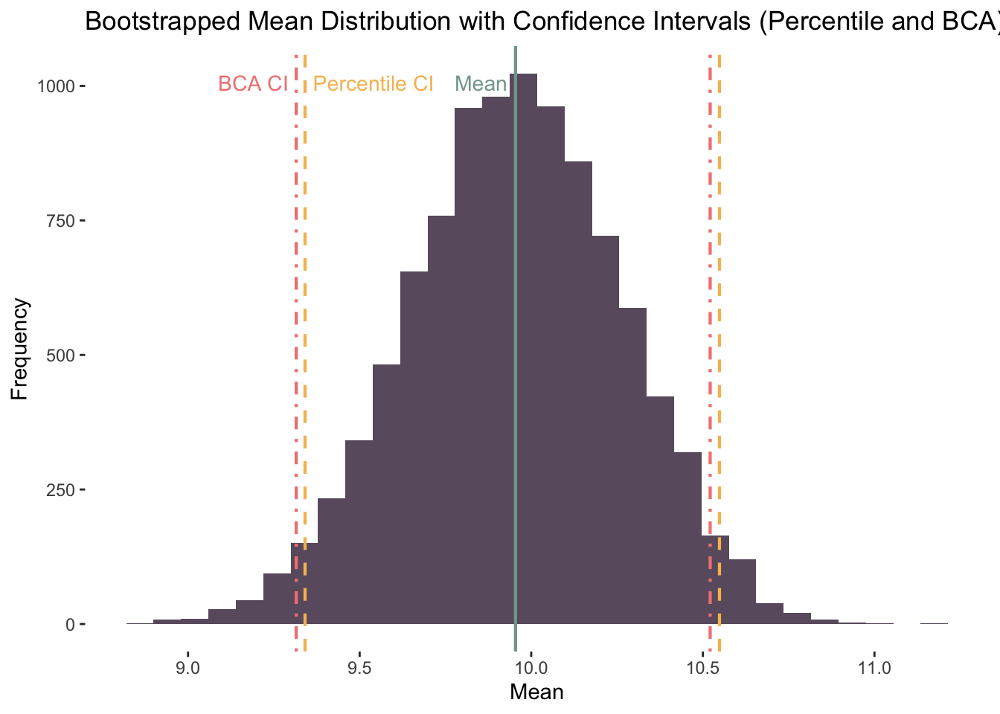
d. For the median bootstraps, plot the 95% confidence intervals (Percentile and BCa). Use
geom_vline and annotateto mark the lines noting what they represent.percentile_ci_mdn = boot.ci(result_mdn, type = "perc", conf = .95) bca_ci_mdn = boot.ci(result_mdn, type = "bca", conf = .95) boot_mdns %>% ggplot(aes(mdn)) + geom_histogram(bins = 30, fill = "#6A5B6E") + ggtitle("Bootstrapped Median Distribution with Confidence Intervals (Percentile and BCA)") + xlab("Median") + ylab("Frequency") + geom_vline(xintercept = percentile_ci_mdn$percent[4], color = "#f6bd60", linetype = "dashed", linewidth = .75) + geom_vline(xintercept = percentile_ci_mdn$percent[5], color = "#f6bd60", linetype = "dashed", linewidth = .75) + geom_vline(xintercept = bca_ci_mdn$bca[4], color = "#f28482", linetype = "dotdash", linewidth = .75) + geom_vline(xintercept = bca_ci_mdn$bca[5], color = "#f28482", linetype = "dotdash", linewidth = .75) + annotate("text", x = percentile_ci_mdn$percent[4] + .275, y = max(table(result_mdn$t)) + 1500, label = "Percentile CI", color = "#f6bd60", size = 3.75) + annotate("text", x = bca_ci_mdn$bca[4] - .175, y = max(table(result_mdn$t)) + 1500, label = "BCA CI", color = "#f28482", size = 3.75) + theme(panel.background = element_rect(fill = "transparent"))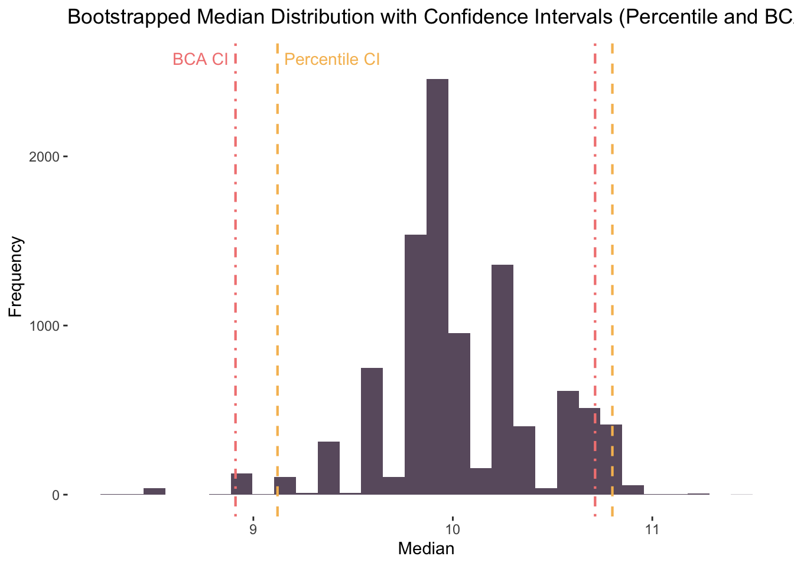
You want to test whether the following paired samples are significantly different from one another: pre = [22,25,17,24,16,29,20,23,19,20], post = [18,21,16,22,19,24,17,21,23,18]. Often researchers would run a paired sampled t-test, but you are concerned the data does not follow a normal distribution.
- Calculate the paired differences, that is post - pre, which will result in a vector of paired differences (pdiff0 = post - pre)
pre = c(22,25,17,24,16,29,20,23,19,20) post = c(18,21,16,22,19,24,17,21,23,18) pdiff0 = post-preb. Calculate the mean of the paired differences (Xpdiff0)
Xpdiff0 = mean(pdiff0)d. Bootstrap b) with replacement (pdiff1) and plot the histogram with
ggplot2.pdiff1 = boot(pdiff0, mean_func, R = 10000)e. Calculate the 95% confidence intervals (BCa). What can you infer from this?
pdiff1_bca = boot.ci(pdiff1, type = "bca", conf = .95) pdiff1_bcaBOOTSTRAP CONFIDENCE INTERVAL CALCULATIONS Based on 10000 bootstrap replicates CALL : boot.ci(boot.out = pdiff1, conf = 0.95, type = "bca") Intervals : Level BCa 95% (-3.0, 0.5 ) Calculations and Intervals on Original ScaleThe confidence interval overlaps 0: the lower bound is negative, while the upper bound is positive. The implication of the overlap is that we might fail to reject the null hypothesis (H0: there is no mean difference between the pre and post measures).
f. Plot bootstrap mean along with 95% CIs (with
ggplot2). Use annotate to note what the vertical lines represent.pdiff1_mean_dist = data.frame(mean = pdiff1$t) pdiff1_mean_dist %>% ggplot(aes(mean)) + geom_histogram(bins = 30, fill = "#6A5B6E") + ggtitle("Bootstrapped Mean Distribution with Confidence Intervals (BCA)") + ylab("Frequency") + xlab("Mean") + geom_vline(xintercept = mean(pdiff1$t), color = "#84a59d", linetype = "solid", linewidth = .75) + geom_vline(xintercept = pdiff1_bca$bca[4], color = "#f28482", linetype = "dashed", linewidth = .75) + geom_vline(xintercept = pdiff1_bca$bca[5], color = "#f28482", linetype = "dashed", linewidth = .75) + annotate("text", x = mean(pdiff1$t) - .25, y = max(table(pdiff1$t)) + 1000, label = "Mean", color = "#84a59d", size = 3.75) + annotate("text", x = pdiff1_bca$bca[4] - .4, y = max(table(pdiff1$t)) + 1000, label = "CI (BCA)", color = "#f28482", size = 3.75) + theme(panel.background = element_rect(fill = "transparent"))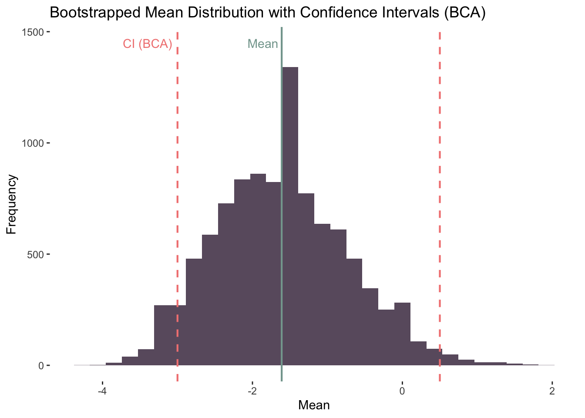
Pepper Joe measured the length and heat of 85 chili peppers. He wants to know if smaller peppers are hotter than longer peppers.
#read data.table to read in chili<- read.delim("https://raw.githubusercontent.com/jgeller112/psy504-advanced-stats/main/slides/03-Robust_Methods/data/chillis.csv")Some species display sexual size dimorphism – in which one sex is on average larger than the other. Such a pattern can tell us about the species’ ecology and mating habits. Do penguins display this sex difference in size? Let’s just look at a subset of the palmerpenguins data set, which we’ll call
my_penguins.my_penguins <- penguins %>% filter(species == "Adelie", !is.na(sex), island == "Torgersen") my_penguins# A tibble: 47 × 8 species island bill_length_mm bill_depth_mm flipper_…¹ body_…² sex year <fct> <fct> <dbl> <dbl> <int> <int> <fct> <int> 1 Adelie Torgersen 39.1 18.7 181 3750 male 2007 2 Adelie Torgersen 39.5 17.4 186 3800 fema… 2007 3 Adelie Torgersen 40.3 18 195 3250 fema… 2007 4 Adelie Torgersen 36.7 19.3 193 3450 fema… 2007 5 Adelie Torgersen 39.3 20.6 190 3650 male 2007 6 Adelie Torgersen 38.9 17.8 181 3625 fema… 2007 7 Adelie Torgersen 39.2 19.6 195 4675 male 2007 8 Adelie Torgersen 41.1 17.6 182 3200 fema… 2007 9 Adelie Torgersen 38.6 21.2 191 3800 male 2007 10 Adelie Torgersen 34.6 21.1 198 4400 male 2007 # … with 37 more rows, and abbreviated variable names ¹flipper_length_mm, # ²body_mass_g
a. Visualize body size by sex
my_penguins %>% ggplot(aes(sex, body_mass_g, color = sex)) +
geom_point(position = position_jitter(width = .15, height = 0), size = 4, alpha = .65) +
scale_fill_manual(values = c("#ff006e", "#3a86ff")) +
ylab("Body Mass (g)") +
xlab("Sex")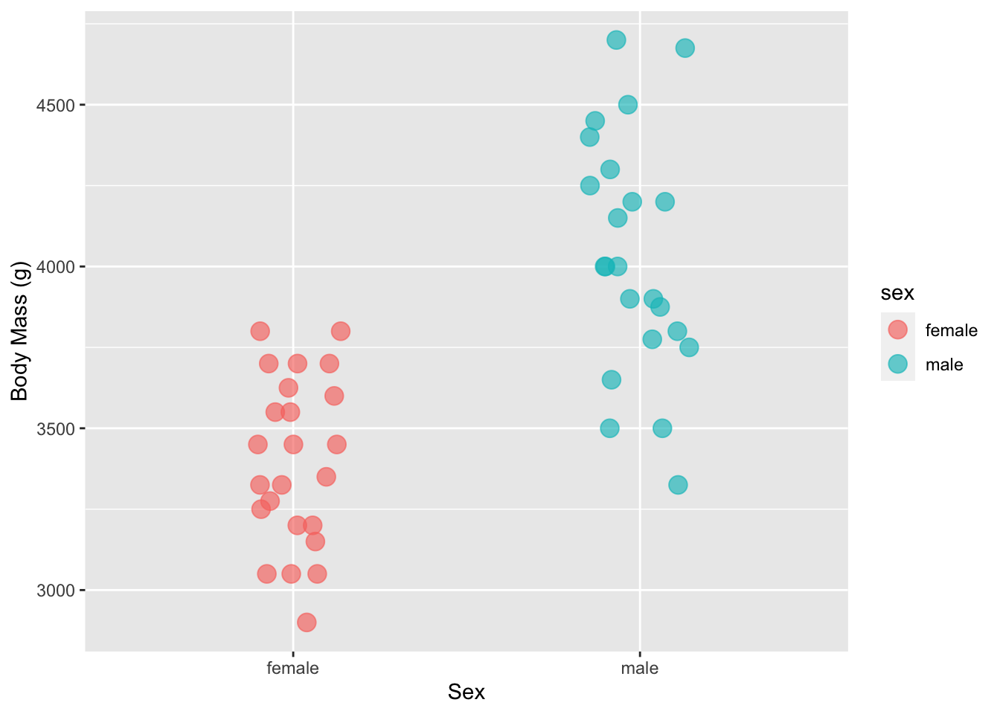
b. Calculate the original mean difference between sex
sample_diff = my_penguins %>%
specify(body_mass_g ~ sex) %>%
calculate(stat = "diff in means", order = c("male", "female"))
sample_diff$stat[1] 638.9493c. Permute the group labels (10000x)
null_dist = my_penguins %>%
specify(body_mass_g ~ sex) %>%
hypothesize(null = "independence") %>%
generate(reps = 10000, type = "permute") %>%
calculate(stat = "diff in means", order = c("male", "female"))d. Plot the null-hypothesis distribution (NHD) for the difference
null_dist %>%
visualize() + shade_p_value(obs_stat = sample_diff, direction = "two-sided")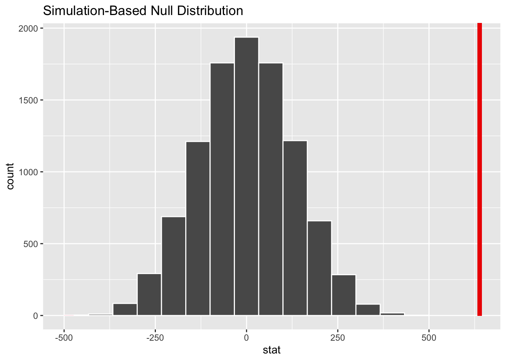
e. Compare the observed mean difference to the NHD (is p < .05?)
null_dist %>%
get_p_value(obs_stat = sample_diff, direction = 'two-sided')# A tibble: 1 × 1
p_value
<dbl>
1 0p < .05
Suppose a replication experiment was conducted to further examine the interaction effect between driving difficulty and conversation difficulty on driving errors in a driving simulator. In the replication, the researchers administered the same three levels of conversation difficulty; (1) control, (2) easy, (3) difficult (C, E, D) but assume that they added a third level of driving difficulty; (1) low, (2) moderate, (3) difficult (L, M, D). Assume the design was completely between subjects and conduct a factorial ANOVA to test the main effects of conversation and driving difficulty as well as the interaction effect. The DV is the number of errors committed in the driving simulator.
fac_data<-read_csv("https://raw.githubusercontent.com/jgeller112/psy503-psych_stats/master/static/assignment/data/fact_final.csv") #Fit the model model = aov(errors ~ convo * drive, data = fac_data) #Output the results model %>% broom::tidy() %>% gtterm df sumsq meansq statistic p.value convo 2 3323.2000 1661.60000 65.80975 6.375018e-22 drive 2 1560.4333 780.21667 30.90146 3.496693e-12 convo:drive 4 223.6667 55.91667 2.21465 6.941963e-02 Residuals 171 4317.5000 25.24854 NA NA a. Run a permutation test (ANOVA)
permuco::aovperm(errors ~ convo * drive, data = fac_data, np = 10000, type = "permutation")Anova Table Resampling test using freedman_lane to handle nuisance variables and 10000 permutations. SS df F parametric P(>F) resampled P(>F) convo 3323.2 2 65.810 0.000e+00 0.0001 drive 1560.4 2 30.901 3.497e-12 0.0001 convo:drive 223.7 4 2.215 6.942e-02 0.0725 Residuals 4317.5 171b. How would you follow-up significant effects in this context?
To follow-up the significant main effects in the model, we could explore the nature of the effects by conducting post-hoc tests. For instance, we could conduct pairwise comparisons between the levels of conversation difficulty to determine which specific levels of conversation difficulty are significantly different from each other in terms of the mean number of driving errors. Similarly, we could conduct pairwise comparisons between the levels of driving difficulty to determine which specific levels are significantly different from each other. We could also examine the effect sizes of the main effects and compare the magnitude of the main effects to determine which ones are more important to predicting the number of driving errors. Lastly, we could visualize the main effects (e.g., using box or rain plots) to assist our understanding of the main effects.
Robust Linear Models
- Suppose we have the following data frame in R that contains information on the hours studied and exam score received by 20 students in some class:
df <- data.frame(hours=c(1, 1, 1, 1, 2, 2, 2, 3, 3, 3, 4,
4, 5, 5, 5, 6, 6, 7, 7, 8),
score=c(67, 68, 74, 70, 71, 75, 80, 70, 84, 72,
88, 75, 95, 75, 99, 78, 99, 65, 96, 70))a. Use the lm() function to fit a regression model in R that uses hours as the predictor variable and score as the response variable
mod = lm(score ~ hours, data = df)
mod %>%
broom::tidy() %>%
gt()| term | estimate | std.error | statistic | p.value |
|---|---|---|---|---|
| (Intercept) | 71.157563 | 4.708495 | 15.112591 | 1.137338e-11 |
| hours | 1.945378 | 1.074562 | 1.810392 | 8.696134e-02 |
b. Interpret the results
The results of the model suggest that exam scores increase by 1.95 for each additional hour spent studying. However, the increase is not significant (p = 0.09).
Marginal effect
c. Check assumptions and report which assumptions are violated (include stats or plots)
(Residual) Linearity and Homoscedasticity
#1 - Residual linearity and homoscedasticity
performance::check_model(mod, check = c("linearity", "homogeneity"))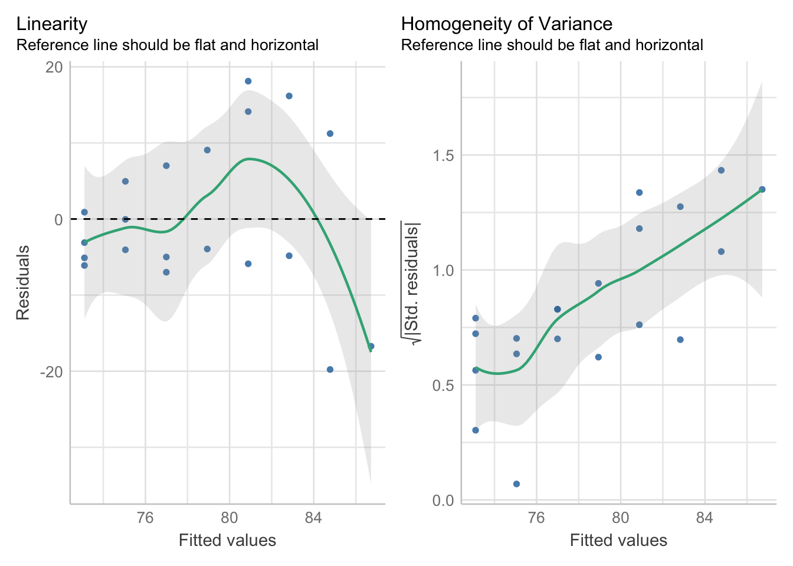
The plots above suggest that the assumptions of (residual) linearity and homoscedasticity are not met by the data. The residuals and the predicted values do not fall along a straight line. In other words, the model has larger errors at different predicted values. The violation of the linearity assumption can also be read from a scatter plot of the raw values of the DV and IV:
df %>% ggplot(aes(hours, score)) +
geom_point(size = 4) +
geom_smooth(method = "loess", se = FALSE, color = '#84a59d') +
ggtitle("Scatter Plot of Exam Scores and Hours Spent Studying") +
ylab("Exam Score") +
xlab("Hours")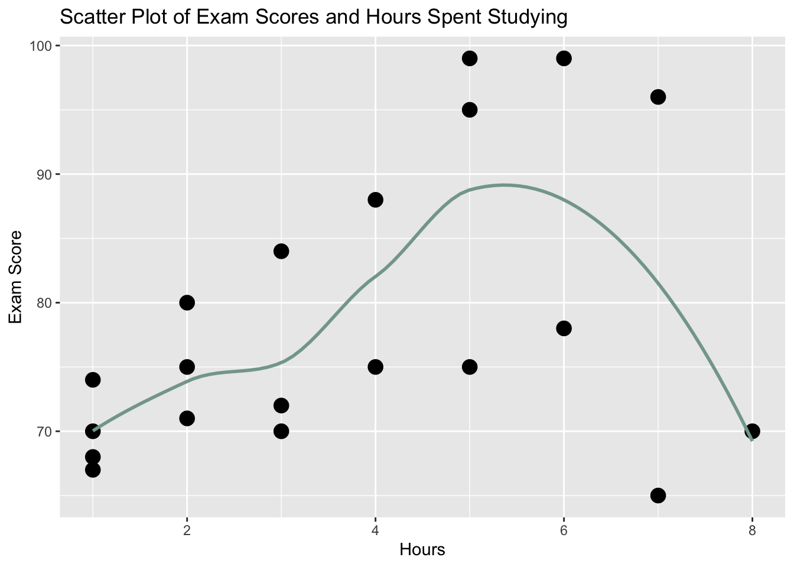
Normality of Residuals
#Normality of residuals
performance::check_model(mod, check = c("qq", "normality"))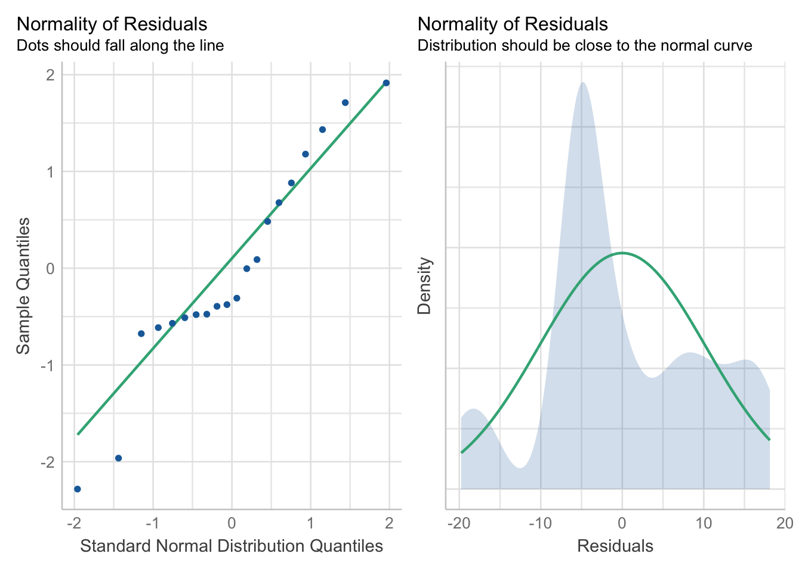
These plots suggest that a second assumption, the normality of residuals, is also being violated by our current model. The Q-Q plot suggests that the majority of points do not fall along the straight line and that, as a result, the model is making poorer predictions for those values. Additionally, the density plot does not appear to follow a normal distribution (although a Shaprio-Wilk test returns a p > .05).
Outliers
performance::check_model(mod, check = "outliers")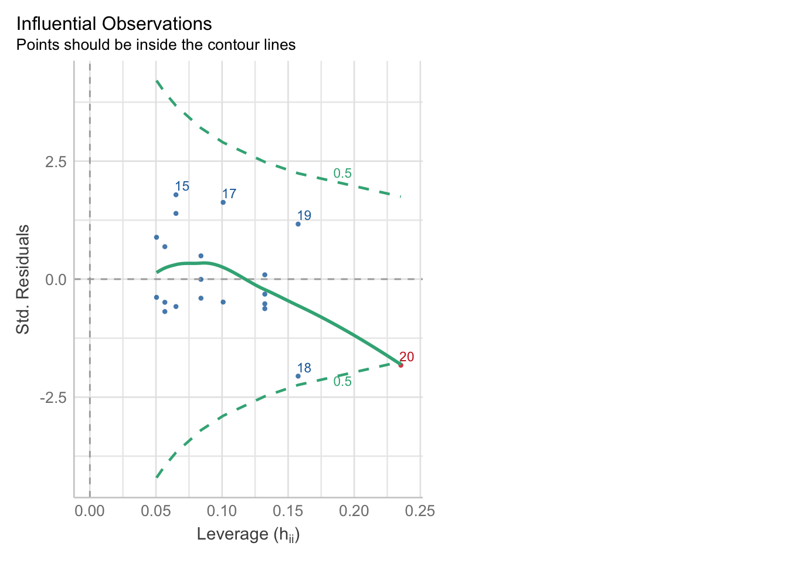
While an absence of outliers is not an assumption of linear models per se, it is good practice to examine the data for their presence. The plot above suggests that one influential case may be causing trouble for our model (red point, outside lower dashed contour).
As we are dealing with only one predictor, we need not be concerned with the no multicolinearity assumption and (assuming the data is between-subjects) the independence of observations assumption.
d. Re-run the lm you saved above, but with robust standard errors
mod_robust = coeftest(mod, vcov = vcovHC(mod, type = "HC0"))
mod_robust %>%
broom::tidy() %>%
gt()| term | estimate | std.error | statistic | p.value |
|---|---|---|---|---|
| (Intercept) | 71.157563 | 3.307191 | 21.516011 | 2.718707e-14 |
| hours | 1.945378 | 1.207174 | 1.611515 | 1.244631e-01 |
e. What differences do you notice between the regular regression and the regression with robust SEs applied?
Compared to the original model with a standard error of 1.075, the new model with robust standard errors reports a standard error of 1.207, an increase of 0.132. Our assumption tests for the original model revealed the presence of heteroscedasticity. Therefore, the standard error in the new model is likely more accurate. Confidence intervals should be calculated based on the robust standard errors.